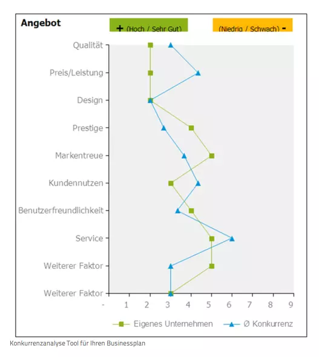
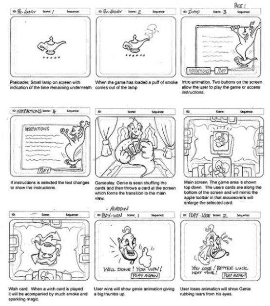

Businessplan
Konzept
Ein Konzept ist ein skizzenhafter, stichwortartiger Entwurf, Rohfassung eines Textes, einer Rede oder
Ähnlichem. Es kann aber auch ein klar umrissener Plan, Programm für ein Vorhaben sein.
Konzepte werden meist in der Projektarbeit erstellt oder wenn neue Ideen und Innovationen im Team, der
Abteilung oder im Unternehmen eingeführt und umgesetzt werden wollen. Das Ziel ist es, möglichst
informativ
und überzeugend zu präsentieren, was erreicht werden soll. Ein viel verbreitetes Problem ist das, die
meisten Konzepte nicht überzeugend, unvollständig oder auch einfach schlecht erstellt werden und
deshalb
abgelehnt werden. Es gibt ein Prinzip ein gutes Konzept zu erstellen, sei heisst Zebra-Prinzip. Demnach
gibt es 5 Grundsätze:
Zielorientiert:
Wird ein Konzept erstellt, das nicht klar und eindeutig definiert, welche Ziele es gibt, ist dies von
Anfang an gescheitert. Nach der Präsentation ist es wichtig, dass alle Teilnehmer, wissen was das Ziel
ist.
Empfängerorientiert
Ein erfolgreiches Konzept sollte sich immer daran orientieren, für wen es erstellt wird. Nur so kann es
wirklich für alle verständlich sein, auch wenn nicht alle Beteiligten denselben Wissenstand zum Thema
mitbringen. Ein entscheidender Punkt für die erfolgreiche Kommunikation.
Beherzt und auf den Punkt gebracht:
Man sollte sich kurzfassen und auf das wesentliche konzentrieren.
Realistisch geplant
Konzepte können auch große Ziele beinhalten, allerdings muss es auch umsetzbar bleiben. Durch
unrealistische Erwartungen und Ziele, die niemals erreicht werden können, wie zum Beispiel zeitlicher
oder
vielleicht auch finanzieller Sicht, lassen jedes Konzept scheitern.
Auslöser für Aktivitäten
Zu guter Letzt sollten Sie Konzepte erstellen, die nicht nur Ideen und Ziele, sondern auch klare
Strategien
und Handlungsempfehlungen enthalten. Dies orientiert sich an der Frage: Was muss und soll getan werden,
um
das Ziel zu erreichen?
Wenn das ZEBRA-Prinzip zu tiefgehend ist kann man mit der Unten stehenden Liste, ein einfaches Konzept
erstellen.
Aufbau eines Konzepts:
Wenn das ZEBRA-Prinzip zu tiefgehend ist kann man mit der Unten stehenden Liste, ein einfaches Konzept
erstellen.
Aufbau eines Konzepts:
• Ausgangslage
Gruppe, Namen, Auftrag
• Ziel
aus dem Ziel des Projektbriefings abgeleitet
• Auftrag
Was ist der konkrete Auftrag der Gruppe
• Idee
konkret! Was wollen wir machen
• Umsetzung
von wann bis wann, Anzahl Personen im Einsatz, benötigtes Material, etc.
• Kosten
Material, Miete, Kauf etc. ohne Personalaufwand
• Termine
Lieferfristen, Anlieferung, Abholen, Bestellungen bis …
1.1 Marktanalyse
Die Marktanalyse definiert den Zielmarkt des Produkts, weist auf Marktpotenziale hin, die noch nicht ausgeschöpft sind oder prüft zudem das Marktwachstum und Marktvolumen. Ausserdem hilft sie, Fehlentscheidungen und Fehlinvestitionen zu vermeiden. Sie erweitert ebenfalls Ihre Marktkenntnisse, sucht nach vergleichbaren Produkten und reduziert so das Risiko, dass Sie unvorbereitet im Markt handeln. Sie schliesst Informationslücken in Bezug auf die Entwicklung ihrer Branche. Dank der Marktanalyse können die möglichen Reaktionen der Mitbewerber auf den eigenen Markteintritt besser eingeschätzt und eingeplant werden.
1.1.1 Marktbereich
Der Marktbereich bestimmt die Kategorie des Marktes. Zum Beispiel, wenn man elektrische Geräte verkauft, dann ist man in dem Marktbereich Elektronik, wenn man Lebensmittel verkauft ist man in dem Marktbereich Lebensmittel. Man probiert so spezifisch wie möglich dem Markt zu beschreiben, um einen klares Bild über die eigene Firma zu bekommen. Bei der Konkurrenzanalyse wird es entscheiden sein, denn als Handy-Firma sollte man sich nicht mit einer Auto-Firma vergleichen, weil man in verschiedenen Marktbereichen tätig ist. Deswegen soll man den Marktbereich auch klar definieren sein, damit man bei Zukünftigen Bestimmungen, wie Zielgruppen, klare Urteile fällen kann.
1.1.2 Zielgruppenbestimmung
Bei der Zielgruppen Bestimmung, versucht man herauszufinden welche Gruppe von Menschen man erreichen
will.
Ausserdem kann man so die Kaufmotive, Einstellungen und Vorlieben der potenziellen Kunden bestimmen. Um
ein
Zielgruppen Profile zu bestimmen, sollte man sich mit der untenstehenden Tabelle sich
auseinandersetzen.
• Geographische Verbreitung
• Sprachen
• Alter
• Interessen: Welches sind ihre wahren Bedürfnisse?
• Bildung
• Einschränkungen: Behinderung, Sehschwäche
• Vorhandene Infrastruktur: Hardware, Software
• Internetzugang
.
1.1.3 Konkurrenzanalyse
 Meistens unterschätzen die Unternehmen ihre Konkurrenz. In der Regel sind es dabei meistens
persönlichen
Annahmen, Eindrücke und oberflächliche Informationen, die zu dieser Einschätzung führen. Solche
Fehleinschätzungen können dazu führen, die Konkurrenz unbemerkt und heimlich am eigenen Unternehmen
vorbeiziehen zu lassen. Um eine solche Gefahr zu umgehen gibt es die Konkurrenz-Analyse.
Mit folgenden Fragen sollen man sich bei dem Sammeln von Informationen für die Konkurrenzanalyse
beschäftigen:
1. Wie viele potenziellen und tatsächlichen Konkurrenten gibt es in Ihrem Bereich bzw. Ihrer Branche?
2. Welche Stellung haben Ihre Konkurrenten am Markt?
3. Wer hat den grössten Marktanteil, wie ist der Markt verteilt?
4. Welche Qualität haben die Produkte Ihrer Konkurrenten?
5. Welche Absatzwege verwendet Ihre Konkurrenz zum Verkauf ihrer Produkte?
6. In welcher Höhe bewegen sich Preise?
7. Gibt es Nachlässe, die sie gewähren?
8. Wie sind die Zahlungs- und Lieferbedingungen?
9. Wie sieht das Image Ihrer Wettbewerber aus?
10. Sind ihre Kunden mit deren Service zufrieden?
11. Auf welche Zielgruppen konzentriert sich Ihre Konkurrenz?
12. Wie wirbt sie für ihre Produkte?
Diese Fragen tragen dazu bei einer Konkurrenz zu analysieren aber sie ausfindig zu machen, muss man anders vorgehen. Als erstes muss man feststellen ob jemand aus der Umgebung dieselben oder ähnliche Produkte herstellt, das wiederum im Kleinen dann im grossen Umfeld. Diese Informationen findet man in Branchenbücher, Zeitungen und so weiter. Jede Firma kann das gleiche Produkt/ Dienstleistung anbieten. Deshalb reicht es nicht nur die die direkte Konkurrenz zu analysieren, sondern auch indirekte. Nachdem man alle möglichen Firmen analysiert hat und alle Informationen gesammelt hat, fängt man mit der Priorisierung an. Dabei werden Qualität, Service, Preis, Marketing und Vertriebskanäle verglichen und so kann man die Stärke eines Unternehmens einschätzen und priorisieren. Jedes Unternehmen hat eine Schwäche, diese sollte man sich zu nutzen machen, um dadurch ein Vorteil zu erlangen.
Folgende Leitfragen können Ihnen bei der Stärken-Schwächen-Analyse dienen:1. Wie schwierig ist es, den Wettbewerber zu finden? Welche Vertriebskanäle verwendet er?
2. Können die Mitarbeiter in Gruppen aufgegliedert werden?
3. Verfolgen sie einige Konventionen (bspw. ungeschriebene Branchengesetze)?
4. Wie hoch sind die Konkurrenzpreise am Markt?
5. Wie lassen sich die Preisdifferenzen begründen?
6. Welche Marketing-Strategie und -Kanäle nutzen Ihre Konkurrenten?
7. Wie wird ein Unternehmen ausgelastet?
8. Arbeitet es effizient und folglich profitabel?
9. Welche Dienstleistungen wünschen die Kunden und welche können Sie ihnen zusätzlich anbieten?
1.2 Marketing-Strategie
Die Marketingstrategie ist eine Art Reiseplan für ein Unternehmen mit dem Ziel, den Konsumenten zu begeistern und interessiert zu behalten. Die unten genannten Punkte zeigen Teilziele der Marketing-Strategie.
1. Ziele:
Welches Ziel möchte man mit der Kampagne erreichen?
Welche Ziele möchten wir langfristig behalten?
2. Budget
Wie viel Geld haben wir zu Verfügung?
3. Zielgruppen
Bestimmt die Zielgruppe an denen das Produkt gerichtet ist.
4. Botschaft
Was wollen wir mitteilen?
Ist der kundennutzen deutlich?
Lasst sich unsere Botschaft in Geschichten erzählen? Mit welcher Geschichte?
5. Positionierung
Unterstützt unser Corporate Design unsere Firma?
Wo liegen unsere stärken?
Wie kann man die Konkurrenz übertreffen?
Wie können wir uns hervorheben?
6. Angebot
Entspricht unser Angebot den tatsächlichen Markenstärken?
Stimmt das Preis-Leistungs-Verhältnis bei unseren Leistungen und entspricht das Preissegment der
Zielgruppe?
Sprechen wir verschiedene Kunden mit individuellen Angeboten und Argumenten an?
Haben wir die Möglichkeiten geprüft, Kunden in die Entwicklung von Produkten zu involvieren?
Zum Beispiel durch das Testen von Prototypen und Betaversionen, Abholen von Wünschen und Interessen via
Social
Media, Newsletter und Blogs usw.
7. Werbung und Kommunikation
Mit welchen Medien und Kanälen erreichen wir unsere Kunden?
Nutzen wir alle wichtigen und passenden Formate (Texte, Infografiken, Videos, Whitepapers)?
Investieren wir genügend Zeit und Wissen in den Aufbau der Inhalte auf den eigenen Plattformen wie
Website,
Blog, Social Media, Kundenzeitschriften etc.?
Wie viel Push-Werbung brauchen unsere Produkte, um bekannt zu werden?
Vernetzen wir unsere Print- und Online-Kanäle sowie andere Aktivitäten miteinander?
Nutzen wir die Möglichkeiten von Social Media und werden diese Kanäle von uns angemessen und in
Echtzeit
bedient?
Sind unsere Plattformen für Suchmaschinen optimiert?
Sind unsere Inhalte für verschiedene Endgeräte optimiert?
Sind Sponsoring, Public Relations oder Eventmarketing ein möglicher Weg, um die Zielgruppen zu
erreichen?
Kommunizieren wir transparent und ehrlich?
8. Marktentwicklung
Welche aktuellen soziokulturellen und technologischen Trends tangieren uns heute und in naher Zukunft?
Welche sind wirklich relevant für uns?
Wie können wir darauf reagieren?
Welche Neuheiten haben die Mitbewerber in der Pipeline? Welche sind auf dem Markt?
Welche Themen bewegen die Branche aktuell?
Betreffen sie unsere Produkte und/oder unsere Kunden?
1.3 Konzeptbeschreib grob
In dem Konzeptbeschreib ist Beschrieben, was ist da und was benötigt wird. Zum Beispiel welche Inhalte werden im Projekt bearbeitet, welch Medien werden benutzt oder wie die Designvorgabe/ Corporate Design aussieht. Ausserdem werden die Projektziele präzisiert. Dann wird die Zielgruppe beschrieben und deren Bedürfnisse. Falls nötig wird auf dem Ansprechpartner der Dienstleisterseite aufmerksam gemacht. Der terminplan und die Offerte wird auch beschreiben. Diese Infos könnten sich bei der Entscheidungsphase verändert werden.
1.4 Moodboad / Look and Feel
Das Moodboard zeigt die verschiedenen looks and feels, die der Kunde haben soll, wenn er das Produkt
sieht
oder
benutzt. Die verschiedenen Bilder, sollen die Gefühle der Konsumenten reflektieren. Bei der Bilder
Auswahl
ist
es wichtig das die Farben zu den Gefühlen passen. Zum Beispiel blau steht für Trauer oder gelb steht
für
Glück.
Nicht nur die Farben, sondern auch das Licht hat ein Einfluss auf die Gefühle. Helle bläuliche Farben
nimmt
man
als kalt wahr und gelbliches Licht empfindet man als warm. Moodboard können aus eigenen Bilder bestehen
oder
aus Bilder die man im Internet findet wichtig ist es, dass die Bilder nicht gestellt. Zum Beispiel ein
Kund
will eine Person als Model haben die Glücklich ist. Dann sollte auf dem Moodboard auch eine Person
dargestellt
sein, die in echt Glücklich ist (Bild 1) und nicht eine gestellte Person die in die Kamera Lacht (Bild
2).

Bei der Gestaltung ist es auch wichtig, dass man nicht das Thema aus dem Augen verliert und sich nur
relevante
Bilder verwendet. Ein Moodboard ist erst dann optimal wenn es selbsterklärend ist. Das Moodboard
Ansicht
ist im
Prinzip nur eine Collage, die das Look and Feel zeigen sollen. Auf der Webseite Adobe Sparks kann man
ganz
einfach Moodboards erstellen. Hier ist der Link zur Webseite: Adobe
Spark
1.5 Storyboard
Wenn man einen Film produziert, wird immer ein Drehbuch geschrieben. Im Drehbuch wird die ganze Geschichte ausführlich aufgeschrieben. Alle Handlungen, Umgebungen, Personen und Konversationen werden detailliert beschrieben. Auf Grund dessen ist das Drehbuch in der Regel sehr gross und man kann sehr schnell den Überblick verlieren. Deswegen gibt es das Storyboard. Dies ist dazu da, alle Szene aufzuzeigen. Jede Szene sie im Drehbuch geschrieben wurde, wird der Rheine nachgezeichnet. Alle Bilder müssen in der Perspektive des Betrachters skizziert werden. Weil man alle Details zeichnet, kann man so eine bestimmte Umgebung bestimmen. Auch die Schauspieler oder das Wetter kann man klar beschreiben. Mit dem klaren Aufbau des Storyboards (Intro, Hauptteil, Aussage) und den genau bestimmten Ablauf, sollte das Storyboard selbst erklärende sein und brauch meistes keine Szenen Beschreibung, welches unten jedem Bild geschrieben wird, aber genau diese Beschreibung vereinfacht die Kommunikation. Wenn man über einen Szenen spricht kann man einfach den «Titel» nennen und alle würden die gleich Szene sehen, ohne Missverständnisse. Insgeheim vereinfacht das Storyboard die ganze Film-Produktion, weil sie so Detailreich ist und für alle verständlich ist.
2 Marketing
Definition Wörterbuch:
alle Aktivitäten eines Unternehmens, den Absatz durch Betreuung der Kunden, Werbung, Beobachtung und Lenkung des Marktes sowie durch entsprechende Steuerung der eigenen Produktion zu fördern.
1. Denken und fühlen wie der Kunde. (der Kern des Marketings)
2. Segmentierung (Zielgruppe bestimmen) Positionierung (Das Image der Firma)
3. Strategie
4. Markt Analyse
5. Produkt (Bedürfnisse Kunde) Place (kauf Möglichkeit) Price (kosten)Promotion (Werbung,
Touchpoint)